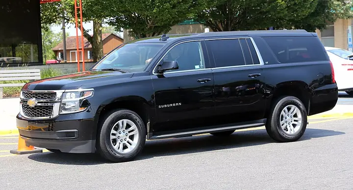
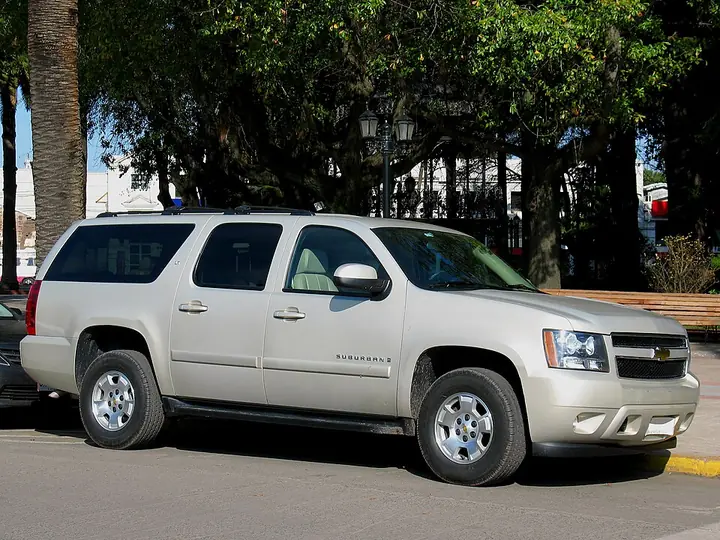
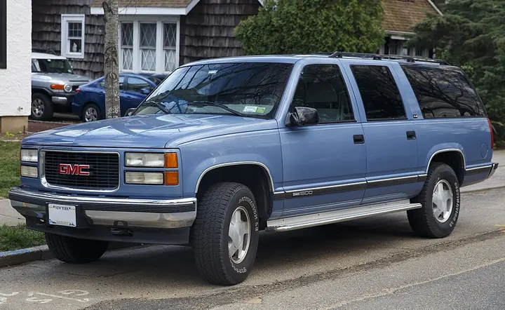
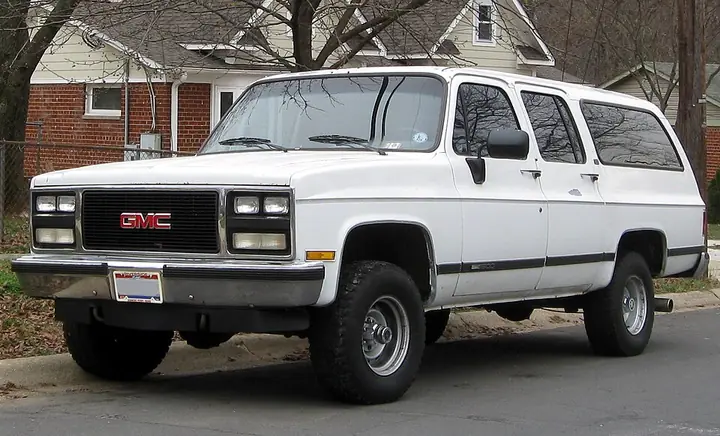
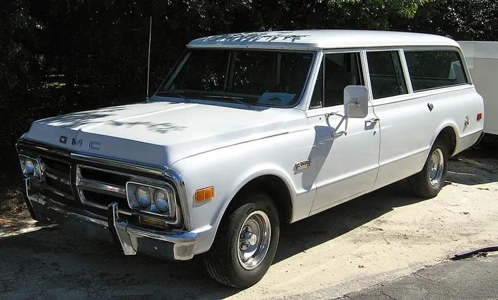
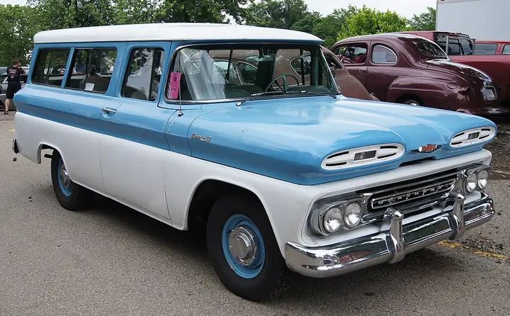
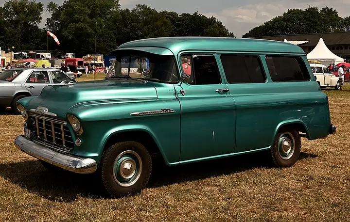
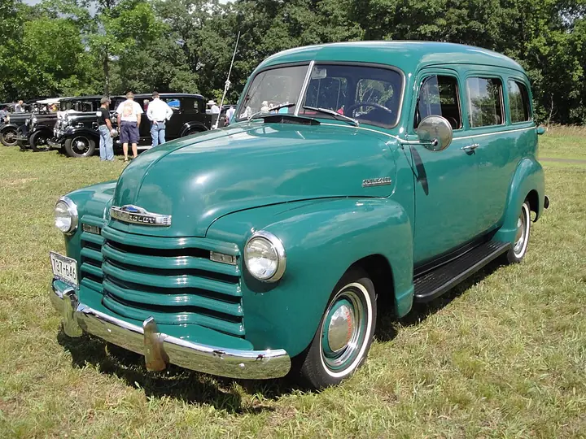
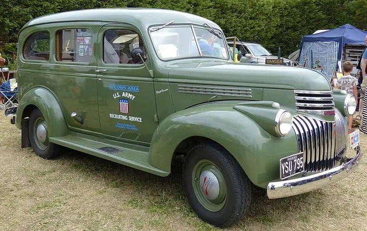
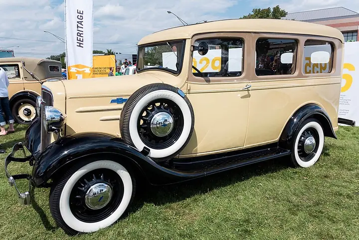

Chevrolet Suburban
Twelfth generation (2021) · 2020–present
Abstract
This generation of the Chevrolet Suburban was built July 2020–present in Arlington, Texas, U.S. (Arlington Assembly). Layout: Front engine.


1Specifications
| Production | July 2020–present |
|---|---|
| Model years | 2021–present |
| Assembly | Arlington, Texas, U.S. (Arlington Assembly) |
| Layout | Front enginerear-wheel drive / four-wheel drive |
| Platform | GMT T1XX |
| Engine | 5.3 L (325 cu in) EcoTec3 V8 FlexFuel6.2 L (376 cu in) EcoTec3 V8 FlexFuel3.0 L LM2 Duramax I6 turbodiesel (except 2021–2024 Z71 and Mexico-export version) |
| Transmission | 10-speed Hydra-Matic 10L80 automatic |
| Wheelbase | 134.1 in |
| Length | Suburban: 225.7 inYukon XL: 225.4 in |
| Width | 81.1 in |
| Height | 75.7 in |
| Weight | 5785-5993 lbs |
| Also called | GMC Yukon XLCadillac Escalade ESV (2021–) |
| Related | Cadillac EscaladeChevrolet Tahoe/GMC Yukon |
2Versions
- Chevrolet Suburban
- 2025 refresh (facelift)
- Yukon XL
- 2025 facelift
- Suburban Shield / HD SUV
- Availability
3Previous generations



.jpg){kind=link}








.jpg){kind=link}

.jpg){kind=link}

_(cropped).jpg){kind=link}

.jpg){kind=link}

.jpg){kind=link}
4Generation by generation
Length +15% from the first to the last
1941 19414,994 mm
1947 19474,988 mm
1960 19605,067 mm
1967 19675,474 mm
1973 19735,565 mm
Chevrolet Suburban (eighth… 19915,575 mm
2000 19995,570 mm
2007 20065,649 mm
2015 20135,700 mm
2021 20205,733 mm
Weight +70% from the first to the last
1935 19351,497 kg
1973 19732,648 kg
2007 20062,540 kg